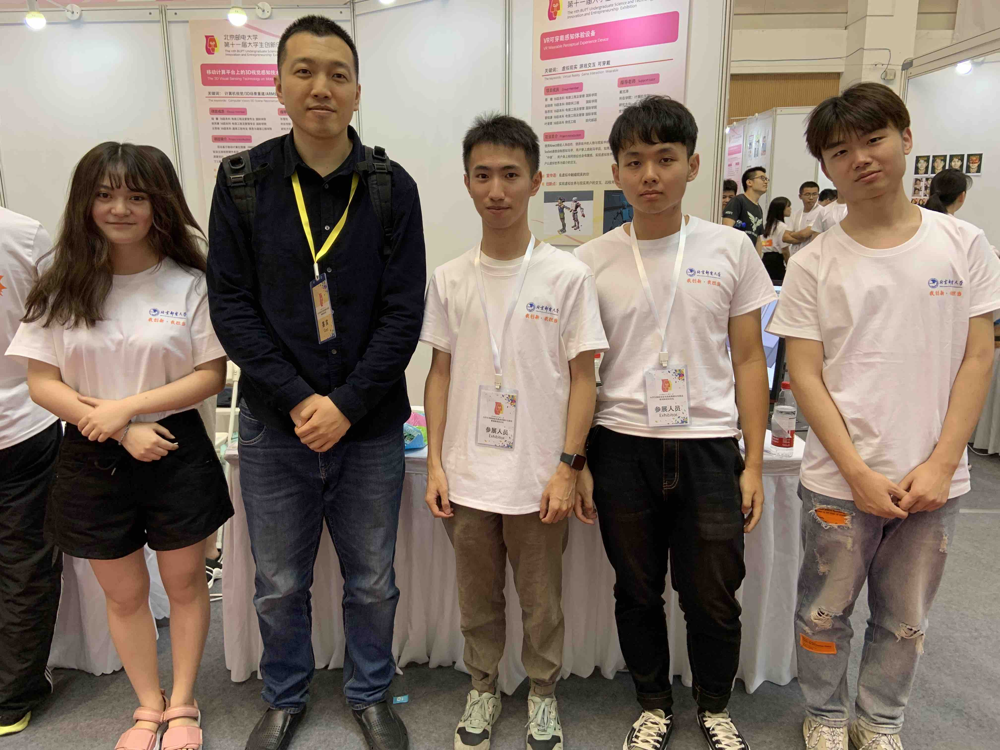

Back
VR Haptic Wearable System
Innovation and Entrepreneurship Training Program 2018 - 2019
By judging the collision conditions between objects and human body in the virtual space, we use linear motor vibration to inform users that the corresponding part of the collision occurs, which enables a quick reaction and a more real simulation of virtual events. Our design includes a low-cost Raspberry Pi ZERO and linear motors. Multiple linear motors are embedded in different parts of the cloth coresponding to different part of the body. We calculate the intensity of vibration according to the strength of the collision, sending commands with the vibration frequency and amplitude data to the device. Then the user can have a more realistic perceptual experience. The product provide a better VR experience with relatively lower cost compared to the ones in the market.
We use Unity3D to make VR mini-games such as an FPS game to demostrate our hardware. The interface we design is simple and almost any games built with Unity3D could apply it with very few codes.
We also design a mobile platform to enable developers to put their VR games and videos on the APP. Using a VR glasses with a smartphone as the monitor helps the users save the budget.
